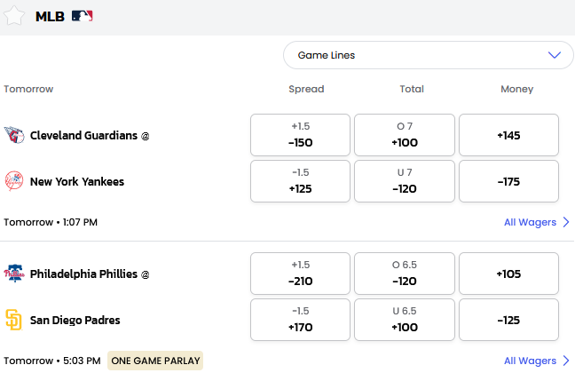
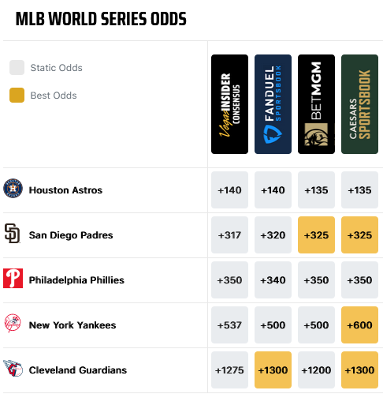
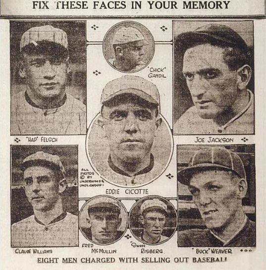
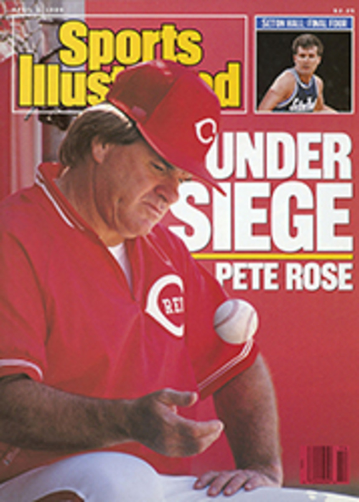
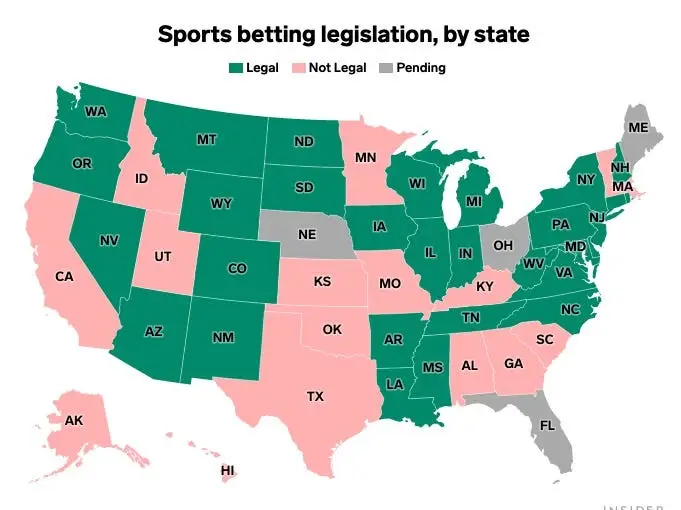

Odds
The odds that an event occurs with probability \(p\) (\(0 \leq p \leq 1\)) is
\[\text{odds = } \frac{p}{1-p}\]
In gambling, we often see moneyline odds (AKA American odds) per $100 bet. For example,
- odds: 4 to 1
- moneyline odds: +400
- i.e. a $100 bet could win $400
Today’s Moneyline Odds
BetMGM is the official gambling partner of Major League Baseball

World Series Odds
Websites like VegasInsider present futures.

Black Sox
In 1919, eight players of the Chicago White Sox were accusing of throwing games, including the World Series.

Pete Rose
In 1986, Pete Rose—the all-time MLB leader in hits and manager of the Cincinnati Reds—was accused to betting on their own baseball games.
- banned from MLB
- not reinstated; not in the Hall of Fame

Presence
Here is a map of online gambling in the United States

References
- BetMGM — official gambling partner of MLB
- Odds Wikipedia article
- Oddshark
- VegasInsider